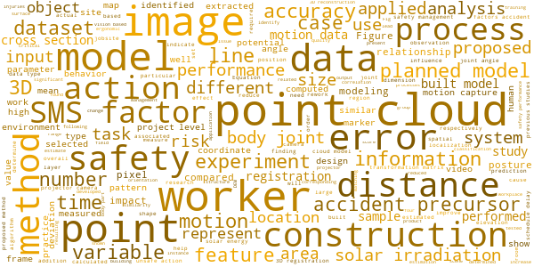

Graduate Student Recruitment
Information for Prospective Students
The CIC lab recruits graduate students with priority given to PhD students, and postdoc fellows in the area of construction engineering and management in the Department of Civil and Environmental Engineering at Hanyang University. Students with a strong background in programming are always welcome. Applicants are encouraged to contact me (sanguk@hanyang.ac.kr) early in order to meet the application deadline and to secure funding in advance; Please kindly understand and excuse that I cannot reply to every email due to a large number of emails I receive.
Research interests include but not limited to:
- Construction Health and Safety
- Computer Vision, Machine Learning, and Robotics
- Data Sensing and Visualization (Digital Twin) --- ongoing project
- Virtual Reality (VR) and Augmented Reality (AR)
- Building Information Modeling (BIM) and Geographic Information System (GIS)
- System Dynamics and Discrete Event Simulation

[Word Cloud: Research keywords extracted from selected papers]
The application procedures and schedules can be found on http://www.grad.hanyang.ac.kr for a domestic student or https://oia.hanyang.ac.kr/ for an international student. Please carefully check the application deadline before you contact me. For an international student, the deadlines for Spring and Fall semesters, as an example, can be early October and mid April, respectively.
Undergraduate Research Internship
The CIC lab opens an internship position for an undergraduate at Hanyang University. Applicants are encouraged to read our papers in advance and understand what research we have been doing. That will be the thing you will most likely do when you join the lab. If you are interested in building your future career in the research area, please do not wait until you graduate and feel free to contact me (sanguk@hanyang.ac.kr) as soon as possible. Students with a strong background in programming are always welcome, but not necessarily required or expected. Your interest in computing and passion to learn is only required.
The following are the common subjects our students generally study when they join the lab:
- Python
- Neural Network
- Deep Learning (e.g., convolutional neural network, recurrent neural network, reinforcement learning)
- Any subject of your interest (e.g., BIM, GIS, Unity, Simulation)
If you have any inquiry, you can also contact our current students at #515 Jaesung Civil Engineering Building. A lab tour may be available upon request.